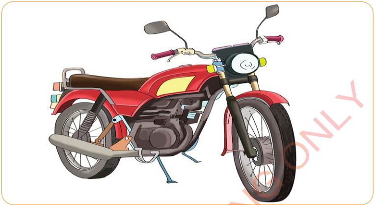

Motorcycle
Figure 3: Non-living things
Activity 2
Imitate the sounds made by at least four non-living things.
Uses of voice in acting
Voice is among the characteristics that an actor must have. Voice is used in acting to do the following:
- (a) Making the words of the actor be clearly heard;
- (b) Attracting the audience to listen to the actor;
- (c) Sending the intended message to the audience;
- (d) Recognising the type of the actor; and
- (e) Expressing the feelings of the actor.